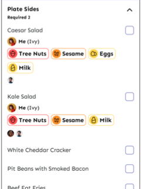

Fig

Personalized ingredient and dietary restriction


Level of severity

Clear warning
Comprehensive food restrictions and allergies
Heavy reading
Projects
2025.08-12
Food allergy order service
A dine-in ordering app that shows personal allergen warnings to optimizes the hassle of dine-in ordering for people with food allergies .
Eating out with a food allergy is not a simple choice, it is a high-stakes decision made in fast, social, and often unpredictable environments.
33,000,000 Americans have
food allergies
25% of severe reactions happen in
food service
More than 50% of restaurant-related allergic reactions occur after diners inform staff of their allergy
Existing apps largely focus on individual preparation or post-purchase decision-making, rather than the real-time complexity of dine-in experiences.
Personalized ingredient and dietary restriction
Level of severity
Clear warning
Comprehensive food restrictions and allergies
Heavy reading

Food product / packaged goods scanning


Diary Entry
Scanning interaction & clear hierachy
Category-based browsing
Non-User-Friendly Terminology

Discover GF-friendly restaurants


Community reviews
Promotes education and awareness
Practical communication
Features misaligned with core purpose
Immersive Experience:
Living Egg-Free (1 Week)
What I did
Pretended to have a severe egg allergy for one week to experience everyday food decisions under real risk.
What I feel +
Constant mental reminders: “You can’t eat that”; everyday foods (bread, snacks) suddenly felt unsafe: no room to “ignore it”.
While using menu (Salt & Smoke), allergens are listed separately from dishes which required flipping back and forth; took ~30 minutes to assess “what I can eat”.
My friends needed to wait me forever and I felt frustrating and socially awkward.
Food allergies create constant cognitive load
Allergy safety directly affects social comfort and participation
Current dine-in systems don’t support real-time decisions


“It’s awkward to be the only person not eating.”

“I have to be in control which is hard in situations where you don’t have control.”

“It’s hard to have a dairy allergy because of how prevalent dairy is in everyday items.”

“They won’t let you know whether the cheesecake is using lactose-free milk or not.”

“Is the stomach ache worth it? Am I just trying to fit in at a dinner and not be the Gluten Free, allergy girl? I don’t know.”
“There’s no way I can know what kind of apple I’m eating.”

Enable fast, confident choices at the table, during ordering, not before
or after.
Acknowledge group settings by supporting shared awareness without forcing awkward conversations.
Use clear, glanceable signals and prioritized warnings.
How might we provide a clear and efficient way to identify safe dishes for people with food allergies and help them communicate dietary needs at restaurants so that they can dine confidently and enjoy an inclusive, stress-free experience shared equally with others.
In the brainstorming phase, I explored a wide range of ideas across Non-mobile app based, mobile app based, and analog approaches.
Sketching across formats helped me quickly compare how different touch points could reduce uncertainty and social friction around food allergies.


Multiple people dine in:
1. Input table #
2. Input Allergens
3. Start order on phone

Single person pick-up:
1. Input Allergens
2. Start order on tablet

My final design concept is a dine-in–focused food allergy device that supports people with allergies at the exact moment they need it: for ordering and eating in restaurants.

After entering the restaurant and taking their seats, customers scanned their phones to order.

Matching a user-input allergy profile with dish ingredients and preparation details from the restaurant.

When a user views a menu or selects a dish, the system highlights safe options and surfaces immediate warnings for items contain allergens.

Viewing cart and placing order.
I chose the app's single user ordering process and draw this user flow to help me clear all the process.

I drew wireframes based on the main user flow, and then further reflected on my design and delved deeper into the details of the interface.
Main elements
Food photo
Dish name (price, rating)
Dish details
View cart
Allergies highlights
Order detail
Flavor, Source, etc
Frequently bought together


Scan QR code and create allergen profile.
Three Levels of Allergy Severity
Most allergy filters treat allergens as binary (avoid / allow). However, allergic reactions vary in severity, and some users with mild allergies may still choose to consume certain foods occasionally. I introduced three severity levels (Low, Medium, High) and paired them with color-coded indicators to help users make informed decisions based on their personal tolerance.

Reflects real behavior:
some eat mild allergens occasionally.
More flexible, less mental load, and clearer risk visibility.
Profile Log & Family Profiles
Most restaurant menus require users to mentally re-filter ingredients every time they order. I introduced saved allergen profiles that allow users to store dietary restrictions once and reuse them in future orders. Users can also create multiple profiles (for example, for children or family members), allowing the system to adjust menu safety indicators for each person automatically.

When dining in groups, people often need to verbally check everyone’s dietary restrictions before ordering or sharing dishes.
I designed the system so users can view the allergen profiles of others in their dining group, allowing everyone at the table to understand dietary restrictions at a glance.

Displaying full allergen warnings for every dish on all the pages can create visual clutter and slow down browsing. However, hiding warnings entirely can make it difficult for users to safely evaluate complex dish combinations.
1 Dish Type: Single vs. Multi-Selection
Displaying detailed allergen warnings for every item can make the interface feel repetitive and visually heavy, especially for simple dishes. However, complex dishes with multiple selections require clear guidance for each option to ensure safe decision-making.
This structure reduces visual noise for simple choices while ensuring precise allergen guidance for more complex meal configurations.

2 Selection Layered Detail:
Menu View
vs. Dish Detail View
When browsing a menu, users need to quickly scan many dishes. Displaying full allergen labels for every item would slow down decision-making.
This approach supports fast menu scanning while ensuring clear safety guidance when evaluating individual dishes.

3 View Group Context: Sharing Awareness
When dining in groups, users often only need to know whether a dish is safe for others, not the exact allergens each person has. Displaying every allergen detail for every diner could create unnecessary complexity and distract from the user's primary task.
This keeps the interface focused and lightweight, while still allowing deeper information when necessary.


Sen
H1 text 20px bold
H2 text 16px bold
body 14px regular
Annotations 12px regular
subtitle 12px bold